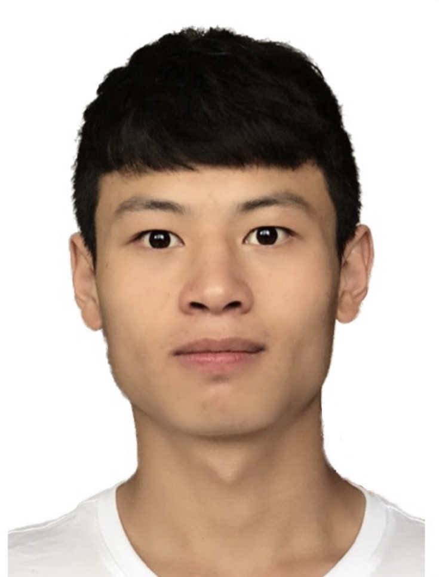
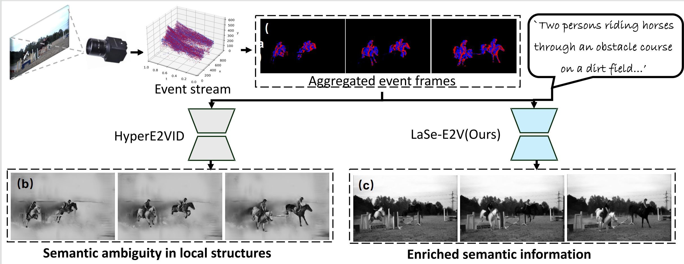

LaSe-E2V: Towards Language-guided Semantic-Aware Event-to-Video Reconstruction
Arkiv
-

Xu Zheng
AI Thrust, HKUST(GZ)
-

Hangyu Li
AI Thrust, HKUST(GZ)
-

Jiazhou Zhou
AI Thrust, HKUST(GZ)
-

Addison Lin Wang
AI & CMA Thrust, HKUST(GZ)
Dept. of CSE, HKUST

Abstract
Event cameras harness advantages such as low latency, high temporal resolution, and high dynamic range (HDR), compared to standard cameras. Due to the distinct imaging paradigm shift, a dominant line of research focuses on event-to-video (E2V) reconstruction to bridge event-based and standard computer vision. However, this task remains challenging due to its inherently ill-posed nature: event cameras only detect the edge and motion information locally. Consequently, the reconstructed videos are often plagued by artifacts and regional blur, primarily caused by the ambiguous semantics of event data. In this paper, we find language naturally conveys abundant semantic information, rendering it stunningly superior in ensuring semantic consistency for E2V reconstruction. Accordingly, we propose a novel framework, called LaSe-E2V, that can achieve semantic-aware high-quality E2V reconstruction from a language-guided perspective, buttressed by the text-conditional diffusion models. However, due to diffusion models' inherent diversity and randomness, it is hardly possible to directly apply them to achieve spatial and temporal consistency for E2V reconstruction. Thus, we first propose an Event-guided Spatiotemporal Attention (ESA) module to condition the event data to the denoising pipeline effectively. We then introduce an event-aware mask loss to ensure temporal coherence and a noise initialization strategy to enhance spatial consistency. Given the absence of event-text-video paired data, we aggregate existing E2V datasets and generate textual descriptions using the tagging models for training and evaluation. Extensive experiments on three datasets covering diverse challenging scenarios, e.g, fast motion, low light demonstrate the superiority of our method.
Comparison with the Previous Baseline
The baseline method (HyperE2VID) solely relies on event data, leading to ambiguity in local structures. In contrast, our approach integrates language descriptions to enrich the semantic information and ensure the video remains coherent with the event stream.
